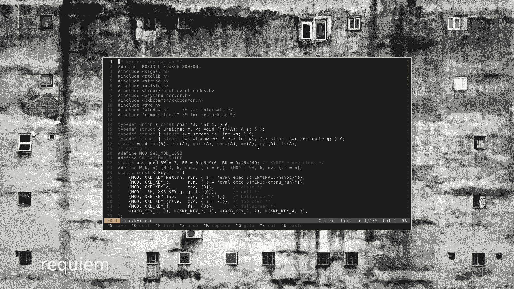

| -> kyrie |
kyrie is the Wayland compositor of requiem. It is built on swc.

FEATURES
- Floating windows, moved and resized with the mouse
- Four workspaces
- Focus follows the mouse
- Fullscreen
KEYS
super + return -> terminal
super + d -> launcher
super + q -> close the window
super + shift + q -> quit kyrie
super + tab -> raise the bottom window
super + ` -> lower the top window
super + f -> fullscreen
super + 1-4 -> switch workspace
super + shift + 1-4 -> send the window to a workspace
super + left drag -> move
super + right drag -> resize
super + middle click -> lower the window
super + p -> screenshot
INSTALL
On requiem:
# introit a desktop/kyrie $ startw |
On other systems, kyrie needs swc with the patches in patches/:
$ make SWC=/path/to/swc |
CONFIGURATION
Colours, border width and extra keys are set without recompiling, as described in the missal. The built-in keys are in keys[] at the top of kyrie.c. Only the US keyboard layout is included.